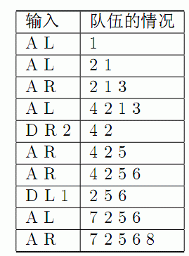

题目描述
约翰的N只奶牛（编为1到N号）正在直线上排队．直线上开始的时候一只牛也没有．接下来发生了S(1≤S≤100000)次事件，一次事件可能是以下四种情况之一：
．一只奶牛加入队伍的左边（输入“AL”）．
．一只奶牛加入队伍的右边（输入“AR”）．
·K只队伍左边奶牛离开（输入“DLK”）．
·K只队伍右边奶牛离开（输入“DRK”）．
请求出最后的队伍是什么样．
数据保证离开的奶牛不会超过队伍里的奶牛数，最后的队伍不空
| F.A.Qs | Home | Discuss | ProblemSet | Status | Ranklist | Contest | 入门OJ | ModifyUser Xeonacid | Logout | 捐赠本站 |
|---|
